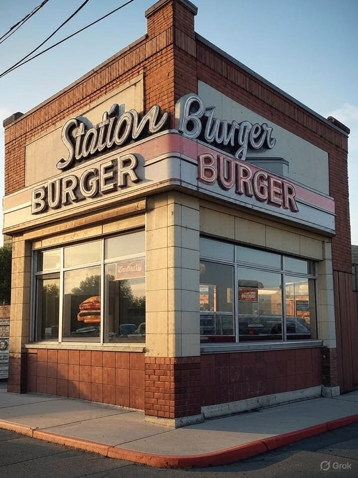

Onde tudo começou
A história do Station Burger é a história de uma paixão: a de Gabi pelo hambúrguer perfeito! Desde sempre fascinada por essa delícia, Gabi dedicou anos a pesquisar, experimentar na própria cozinha e até mesmo a sonhar com as combinações ideais de pães macios, carnes suculentas, queijos derretidos e aquele molho especial que faz toda a diferença.
Essa busca incansável por sabores autênticos e pela montagem ideal transformou um sonho em realidade. O Station Burger nasceu desse desejo de Gabi de compartilhar suas descobertas e criações com toda a comunidade, oferecendo um lugar onde cada hambúrguer é uma celebração.
Após muito planejamento e com o coração transbordando entusiasmo, abrimos nossas portas em 2001. Nosso objetivo, desde o primeiro dia, é proporcionar uma experiência gastronômica única, combinando ingredientes frescos de alta qualidade, um ambiente acolhedor onde todos se sentem em casa, e um serviço atencioso que completa a sua parada em nossa estação de sabor.
